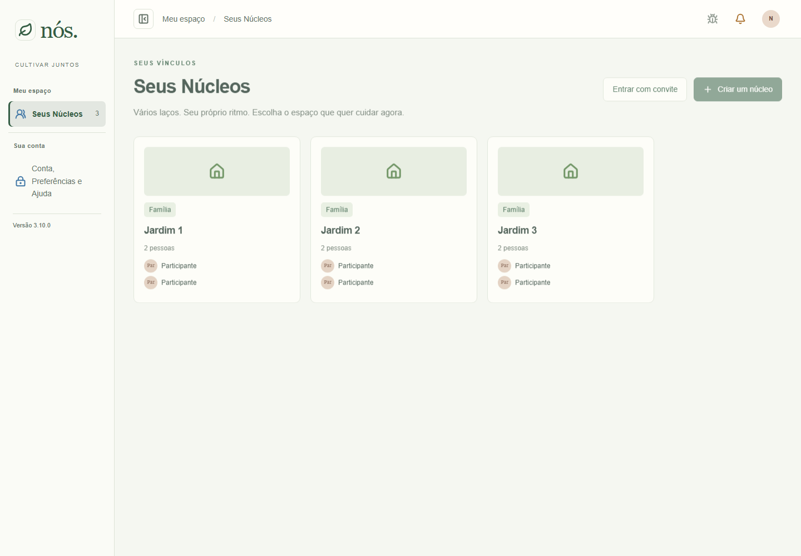
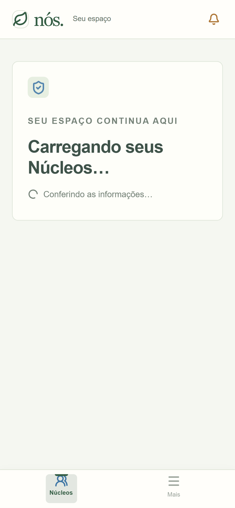
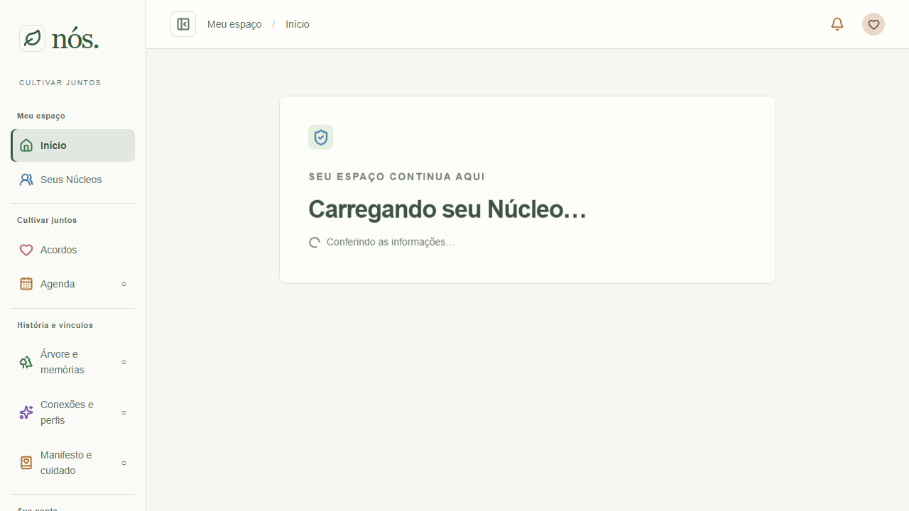
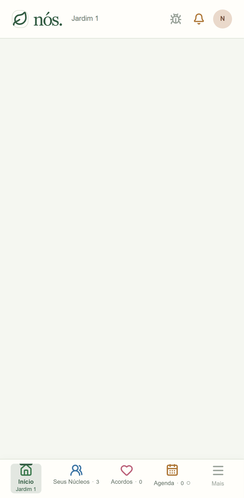
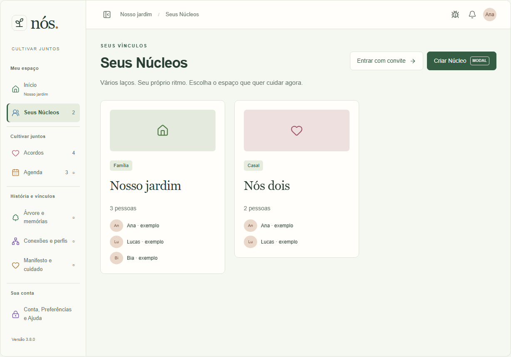
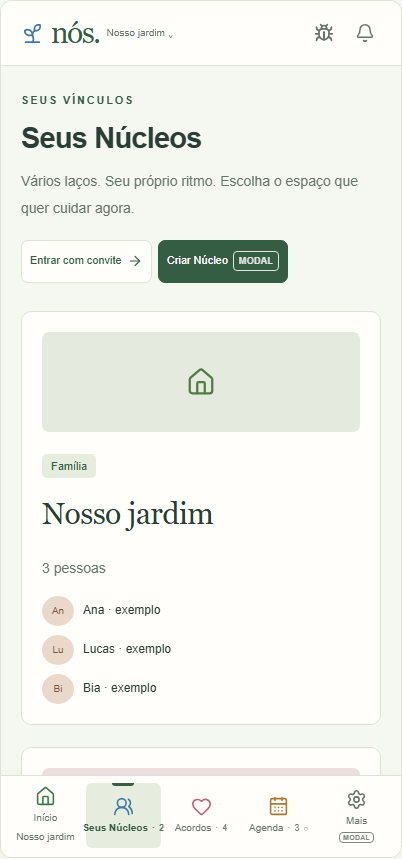
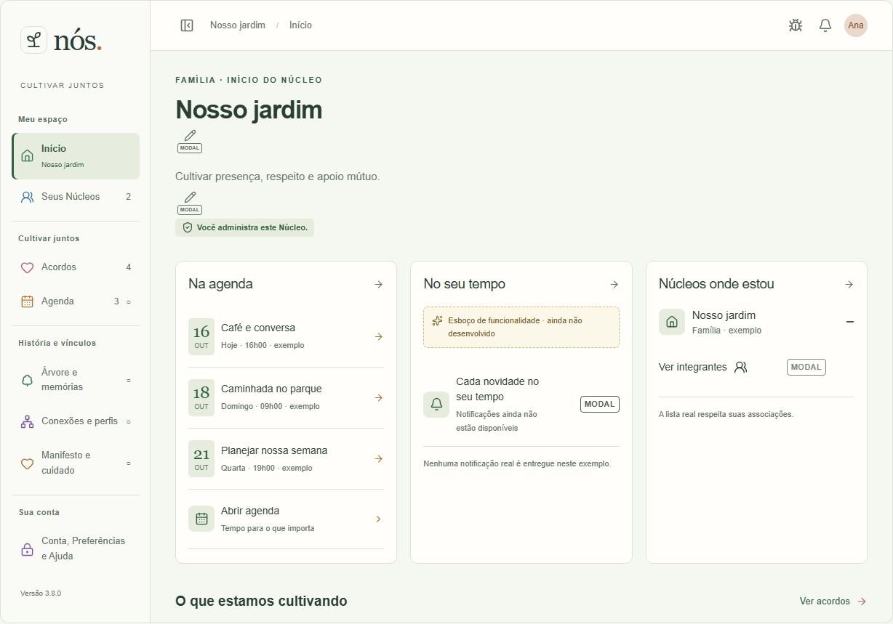

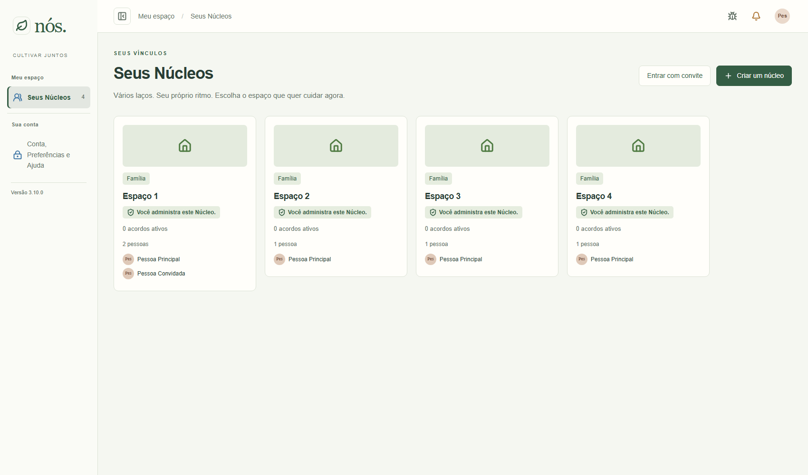
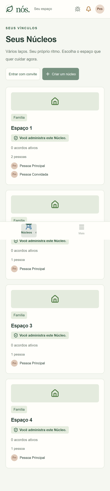
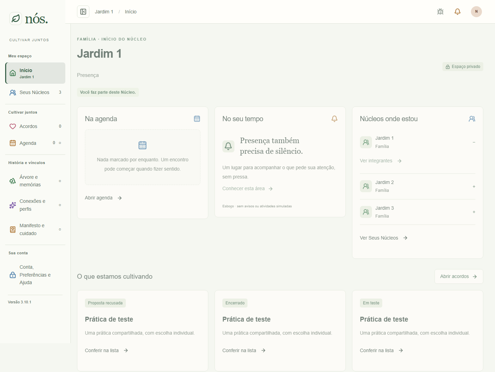
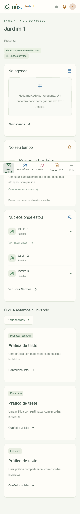
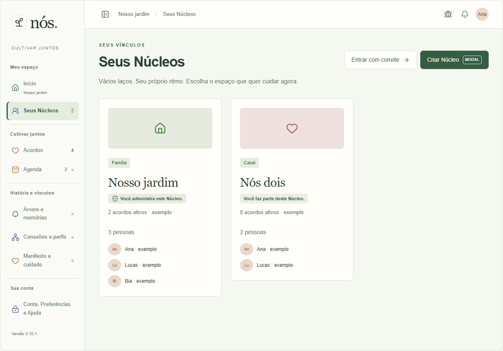
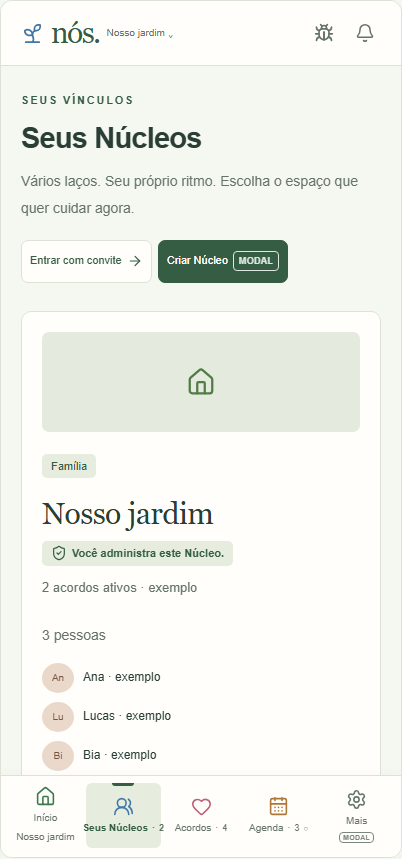

Telas12/13: Atlas offline com antes/depois prontos e exemplos. Aplicativo local com contas descartáveis. As capturas anteriores do aplicativo mostram somente carregamento, não a composição anterior pronta: limitação explícita, sem reconstrução artificial.
Depois12: capturas reais da regressão nucleus-selection aprovada nesta entrega,1700×1000 no computador e390×844 no celular (imagem móvel em pixels do dispositivo). Quatro Núcleos com0 acordos e emblema administrativo. A versão visual ainda era3.10.0 antes do incremento administrativo. Depois13: Home participante na3.10.1,1440×1000 e390×844, captura CSS (altura completa). Dimensões reais de cada imagem nas legendas; Atlas usa recortes próprios. Nenhuma imagem comprova publicação em produção.
Validação funcional adicional:0/1/2 ativos, exclusão de pending/testing/ended/declined, contagem independente de aceite; papéis e escudo, verde em claro/lilás/escuro. Regressões dos cartões cobrem teclado e larguras320–1920. Chromium/emulação, sem aparelho físico/Safari. Atlas mantém diferenças ilustrativas de dados e conteúdo. Sem modal novo.












